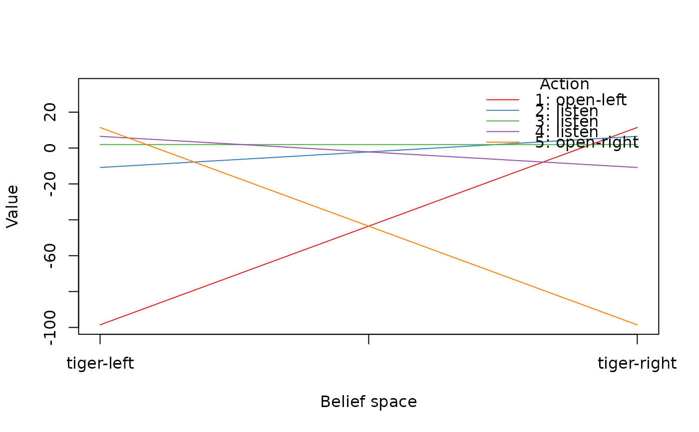
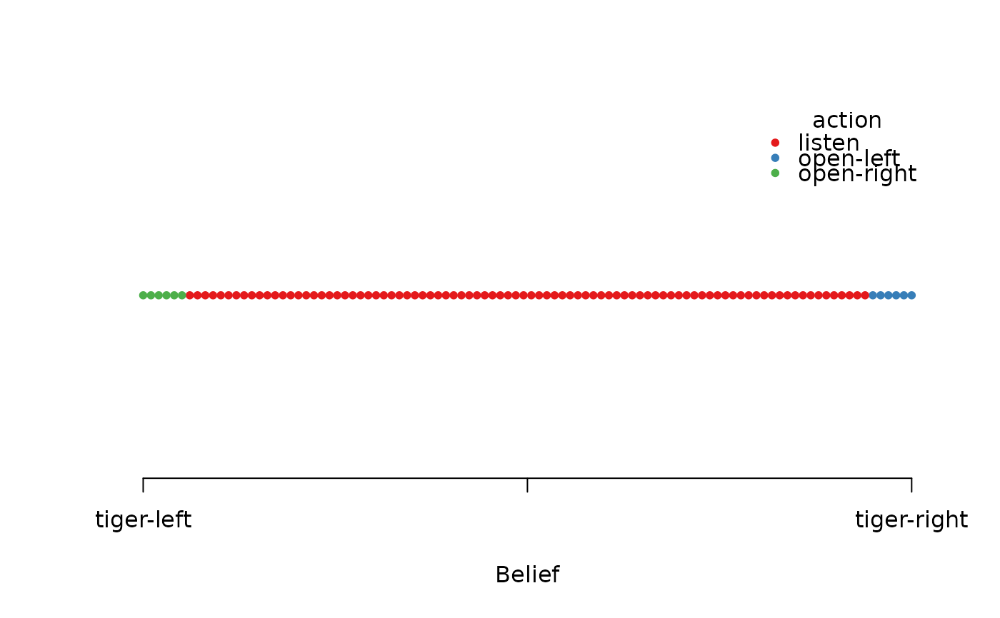
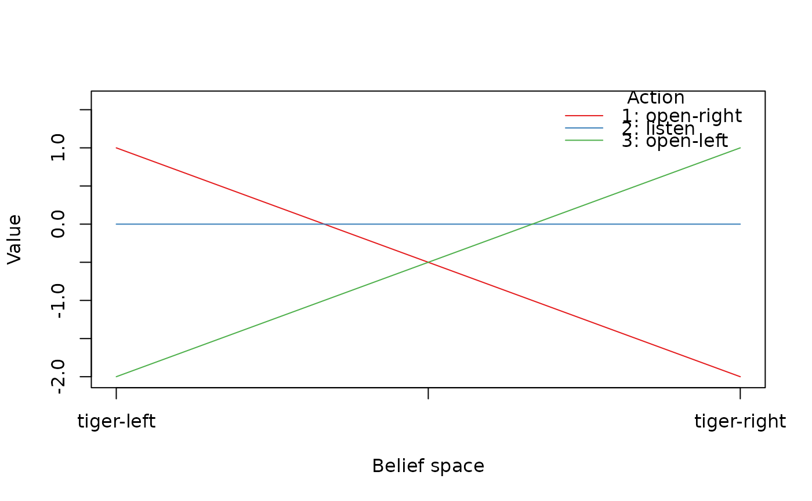
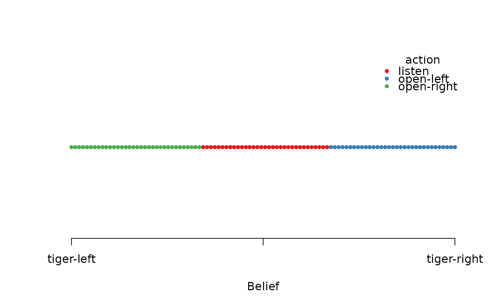

Adding a policy to a POMDP problem description allows the user to test policies on modified problem descriptions or to test manually created policies.
See also
Other POMDP:
MDP2POMDP,
POMDP(),
accessors,
actions(),
plot_belief_space(),
projection(),
reachable_and_absorbing,
regret(),
sample_belief_space(),
simulate_POMDP(),
solve_POMDP(),
solve_SARSOP(),
transition_graph(),
update_belief(),
value_function(),
write_POMDP()
Other MDP:
MDP(),
MDP2POMDP,
MDP_policy_functions,
accessors,
actions(),
gridworld,
reachable_and_absorbing,
regret(),
simulate_MDP(),
solve_MDP(),
transition_graph(),
value_function()
Examples
data(Tiger)
sol <- solve_POMDP(Tiger)
sol
#> POMDP, list - Tiger Problem
#> Discount factor: 0.75
#> Horizon: Inf epochs
#> Size: 2 states / 3 actions / 2 obs.
#> Start: uniform
#> Solved:
#> Method: ‘grid’
#> Solution converged: TRUE
#> # of alpha vectors: 5
#> Total expected reward: 1.933439
#>
#> List components: ‘name’, ‘discount’, ‘horizon’, ‘states’, ‘actions’,
#> ‘observations’, ‘transition_prob’, ‘observation_prob’, ‘reward’,
#> ‘start’, ‘info’, ‘solution’
# Example 1: Use the solution policy on a changed POMDP problem
# where listening is perfect and simulate the expected reward
perfect_Tiger <- Tiger
perfect_Tiger$observation_prob <- list(
listen = diag(1, length(perfect_Tiger$states),
length(perfect_Tiger$observations)),
`open-left` = "uniform",
`open-right` = "uniform"
)
sol_perfect <- add_policy(perfect_Tiger, sol)
sol_perfect
#> POMDP, list - Tiger Problem
#> Discount factor: 0.75
#> Horizon: Inf epochs
#> Size: 2 states / 3 actions / 2 obs.
#> Start: uniform
#> Solved:
#> Method: ‘manual’
#> Solution converged: FALSE
#> # of alpha vectors: 5
#>
#> List components: ‘name’, ‘discount’, ‘horizon’, ‘states’, ‘actions’,
#> ‘observations’, ‘transition_prob’, ‘observation_prob’, ‘reward’,
#> ‘start’, ‘terminal_values’, ‘info’, ‘solution’
simulate_POMDP(sol_perfect, n = 1000)$avg_reward
#> [1] 14.85706
# Example 2: Handcraft a policy and apply it to the Tiger problem
# original policy
policy(sol)
#> tiger-left tiger-right action
#> 1 -98.549921 11.450079 open-left
#> 2 -10.854299 6.516937 listen
#> 3 1.933439 1.933439 listen
#> 4 6.516937 -10.854299 listen
#> 5 11.450079 -98.549921 open-right
plot_value_function(sol)

plot_belief_space(sol)

# create a policy manually where the agent opens a door at a belief of
# roughly 2/3 (note the alpha vectors do not represent
# a valid value function)
p <- list(
data.frame(
`tiger-left` = c(1, 0, -2),
`tiger-right` = c(-2, 0, 1),
action = c("open-right", "listen", "open-left"),
check.names = FALSE
))
p
#> [[1]]
#> tiger-left tiger-right action
#> 1 1 -2 open-right
#> 2 0 0 listen
#> 3 -2 1 open-left
#>
custom_sol <- add_policy(Tiger, p)
custom_sol
#> POMDP, list - Tiger Problem
#> Discount factor: 0.75
#> Horizon: Inf epochs
#> Size: 2 states / 3 actions / 2 obs.
#> Start: uniform
#> Solved:
#> Method: ‘manual’
#> Solution converged: FALSE
#> # of alpha vectors: 3
#>
#> List components: ‘name’, ‘discount’, ‘horizon’, ‘states’, ‘actions’,
#> ‘observations’, ‘transition_prob’, ‘observation_prob’, ‘reward’,
#> ‘start’, ‘terminal_values’, ‘info’, ‘solution’
policy(custom_sol)
#> tiger-left tiger-right action
#> 1 1 -2 open-right
#> 2 0 0 listen
#> 3 -2 1 open-left
plot_value_function(custom_sol)
#> Warning: Value function (alpha vectors) may not be valid for a manual policy!

plot_belief_space(custom_sol)

simulate_POMDP(custom_sol, n = 1000)$avg_reward
#> [1] -13.45469